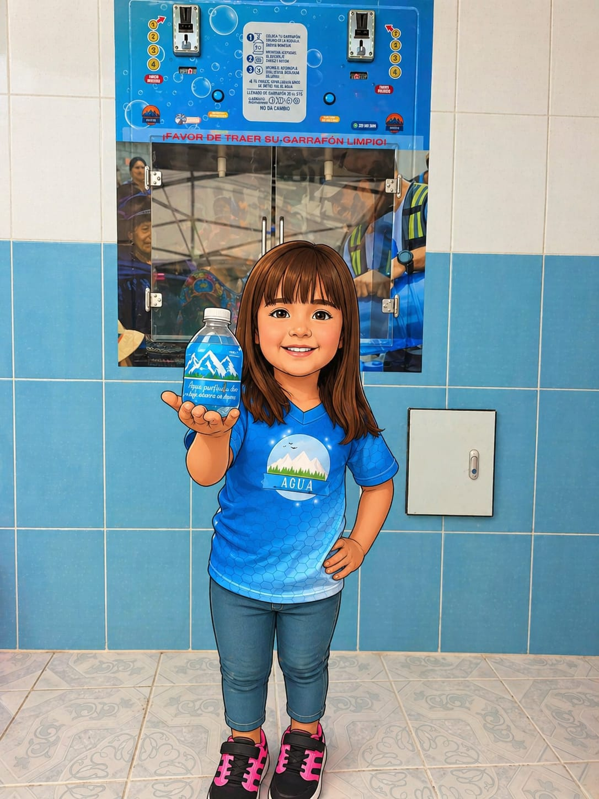
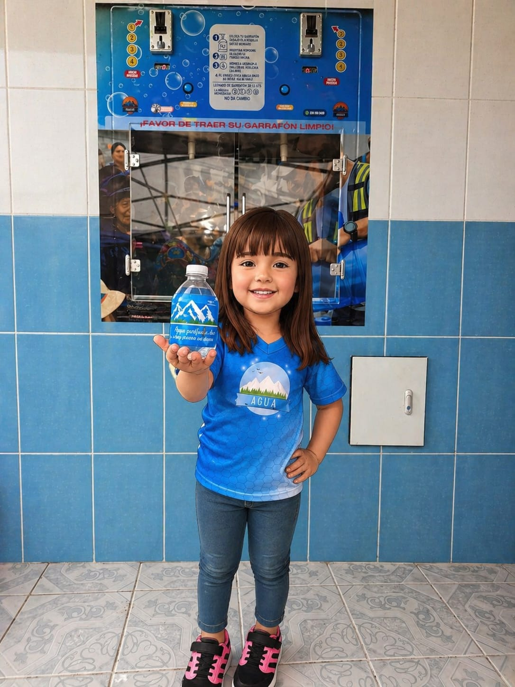
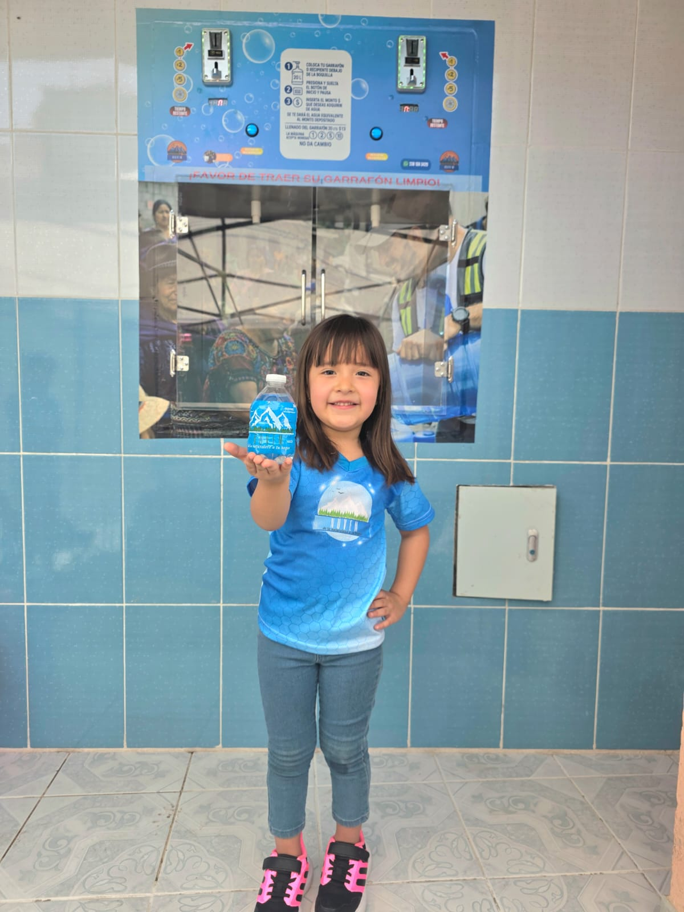
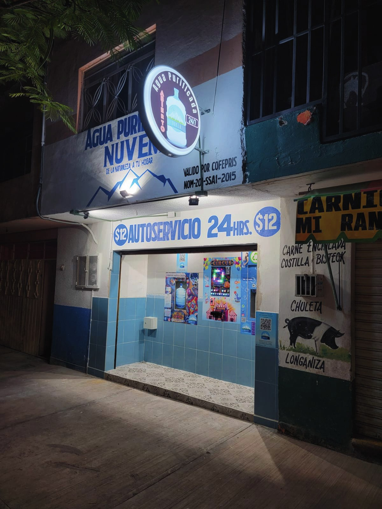
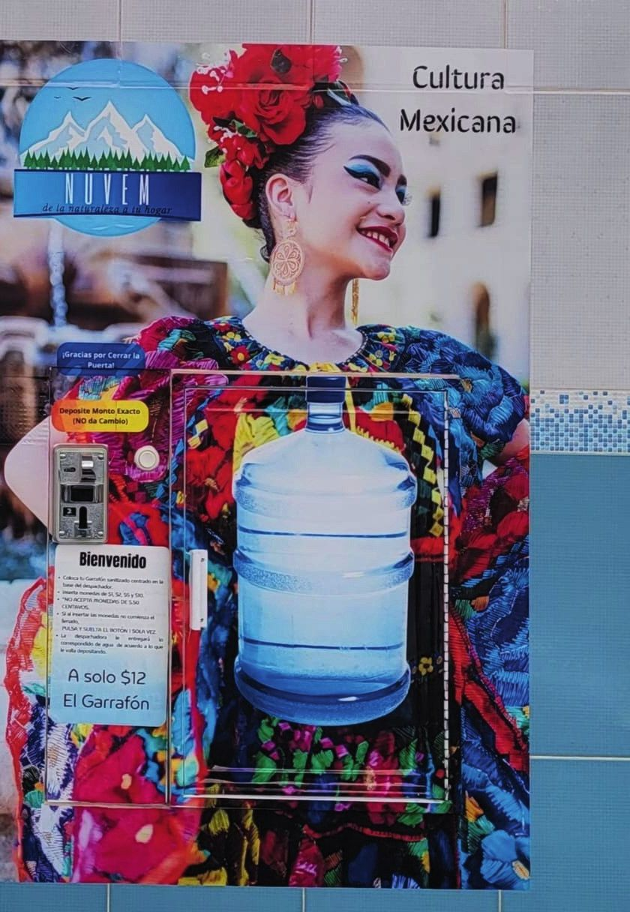
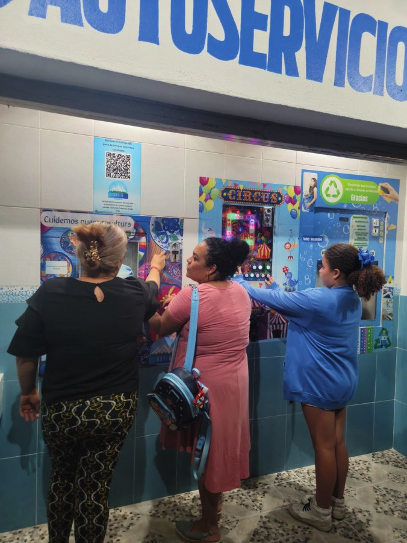
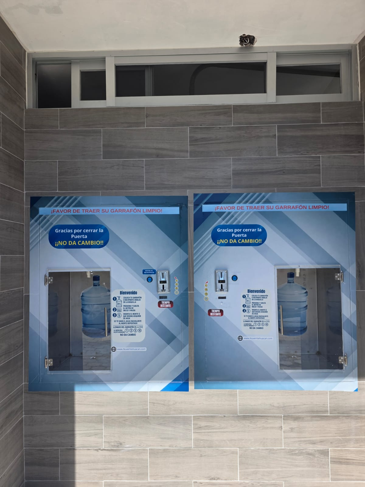
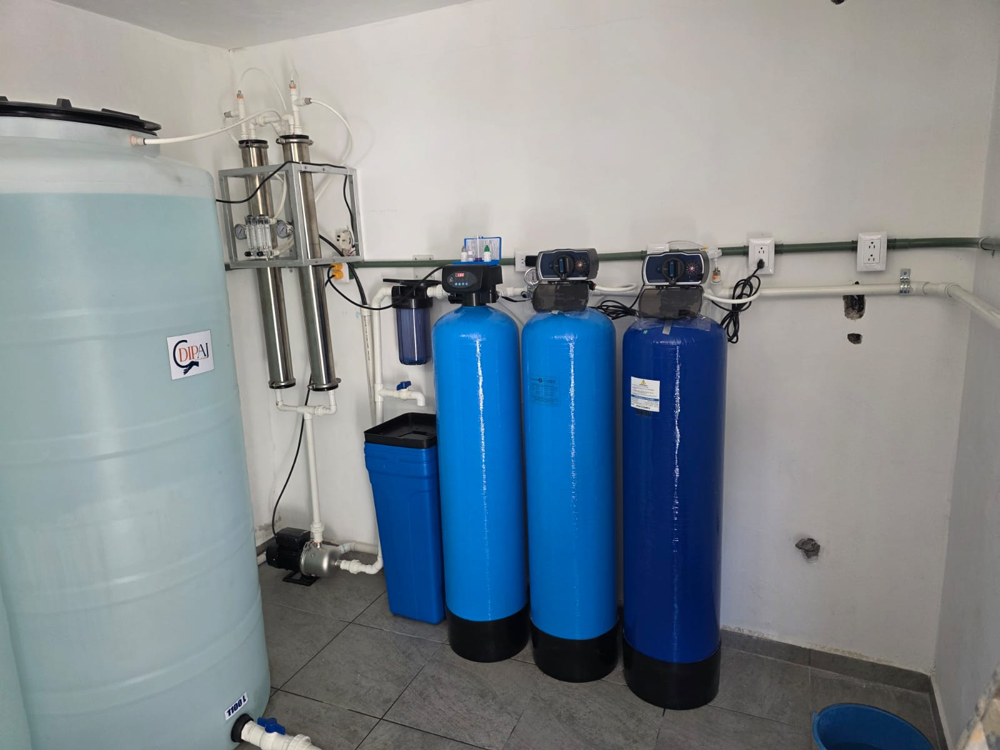
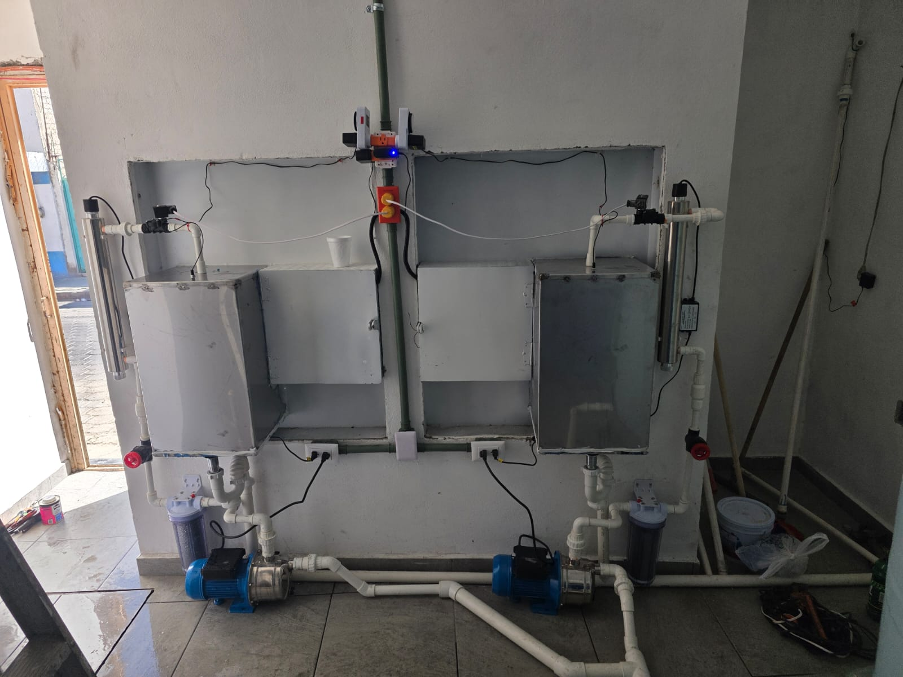

Agua pura, directo de la naturaleza.
En Nuvem purificamos el agua en 6 etapas —ósmosis inversa, carbón activado y luz UV— para acercar la esencia de la naturaleza a tu hogar. Accesible, confiable y pensada para familias y comunidades enteras.
La pureza no siempre se nota a simple vista… pero tu cuerpo sí la agradece.
Combinamos tecnología de purificación de vanguardia con un modelo de servicio accesible, para transformar el agua común en agua confiable, todos los días, para toda la familia.
Purificación en 6 Etapas
Ósmosis inversa, carbón activado, resina catiónica, ozono y luz UV se combinan en cada llenado de tu garrafón.
Hogares y Comunidades
Desde el consumo diario en casa hasta el abasto de comunidades enteras a través de nuestras estaciones.
Compromiso Sustentable
Cuidamos el recurso más valioso mientras ayudamos a reducir el consumo de plástico de un solo uso.
Calidad Garantizada
Control constante del proceso de filtración para que cada garrafón cumpla siempre el mismo estándar de pureza.
Una solución
para cada necesidad
Elige la forma en la que quieres recibir agua Nuvem.



Simple, higiénico y al instante
Del garrafón vacío al agua pura, en menos de un minuto.
Trae tu garrafón limpio
Preséntate en la Estación Nuvem más cercana con tu garrafón limpio y colócalo bajo la boquilla dispensadora.
Inserta el monto deseado
Presiona inicio, deposita el monto y la máquina te entregará el agua equivalente al instante.
Listo, agua pura al instante
Ósmosis inversa, filtración y luz UV garantizan cada llenado. Retira tu garrafón y disfruta.
La Estación Nuvem
purifica en 6 etapas
Cada Estación Nuvem transforma agua común en agua confiable mediante un sistema de filtración avanzado, disponible para tu comunidad todos los días.
-
Sedimentos y Carbón Activado
Elimina cloro, sedimentos y partículas que alteran el sabor y el olor del agua.
-
Resina Catiónica
Ablanda el agua reduciendo el sarro y el calcio para un resultado más ligero.
-
Ósmosis Inversa
Membranas de alta precisión retienen impurezas microscópicas y sales disueltas.
-
Luz UV + Sistema de Ozono
Desinfección final que garantiza agua segura, lista para tomarse con confianza.
Conócenos en
nuestro local
Somos un negocio local con presencia física, no solo una máquina anónima. Autoservicio las 24 horas, para que tengas agua purificada disponible cuando la necesites.
Autoservicio 24 horas. Ven cuando te convenga, todos los días del año.
Somos parte de la comunidad. Decoramos y convivimos con nuestros clientes en fechas especiales.
Proceso verificado. Cumplimos la normativa oficial mexicana para agua purificada.






Instala tu propia Estación Nuvem
¿Quieres llevar agua purificada a tu colonia o negocio? Diseñamos e instalamos el sistema completo, a la medida de la demanda de tu zona.
Paquete Simple
250 garrafones al día, operación manual. 3 bombas presurizadoras, zeolita, carbón activado, resina catiónica, ósmosis inversa, ozono manual y lámpara UV.
Paquete Intermedio
450 garrafones al día, totalmente automatizado. Válvulas eléctricas, ósmosis inversa y sistema de ozono con encendido automático.
Paquete Premium
900 garrafones al día, totalmente automatizado. Doble membrana de ósmosis inversa para mayor capacidad de purificación.
Paquete Delux
900 garrafones al día. Tanques de mayor capacidad (2 pies³) y doble ventanilla despachadora para atender más rápido.
También instalamos equipo complementario: suavizador de agua básico o ultra (elimina sarro y calcio de tuberías), purificadora doméstica de 6 etapas para tu propia casa, y filtros de carbón activado independientes.
purificación
estándar Nuvem
garantizada
botella individual
Ideal para cada contexto
Desde hogares hasta comunidades completas, llevamos agua pura a donde se necesite.
Hogares
Comunidades
Escuelas
Comercios
Eventos
Hablemos de tu Estación Nuvem
Cotiza tu garrafón, tu botella o la instalación de una estación en tu comunidad. Te respondemos por WhatsApp.
Atención Nuvem
Agua purificada, de la naturaleza a tu hogar.
-
Cobertura
Región de Veracruz
(Xalapa y alrededores). -
Ubicación
-
Teléfono